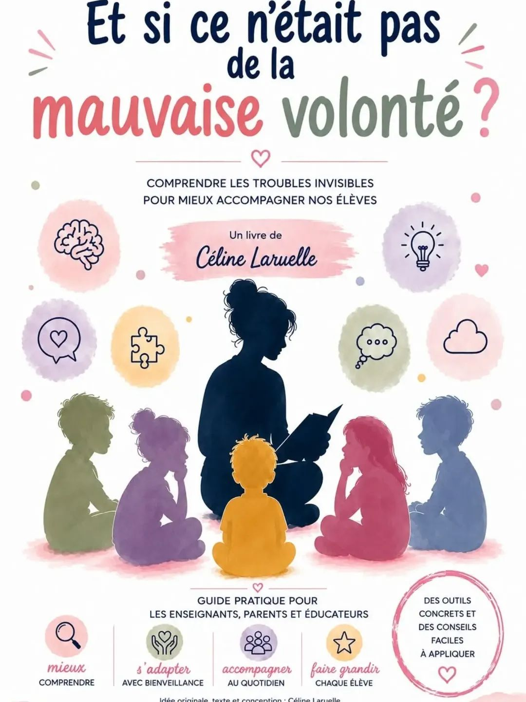

18 ans d'enseignement, une formation en coaching scolaire, et une conviction : chaque jeune peut retrouver confiance et méthode — avec les bons outils, et beaucoup de bienveillance.
d'enseignement en économie sociale et familiale
sur-mesure : chaque accompagnement part du jeune, pas d'un programme figé
bientôt disponible, pour outiller aussi les parents à la maison
D'animatrice de plaines de jeux à coach scolaire : mon parcours, ma pédagogie, et pourquoi ce métier est une vocation.
Découvrir mon parcours →Coaching individuel, accompagnement des familles, suivi personnalisé : comment je travaille avec chaque jeune.
Voir l'accompagnement →
« Et si ce n'était pas de la mauvaise volonté ? » — comprendre les troubles invisibles pour mieux accompagner nos élèves.
En savoir plus →« Un élève n'est pas "juste" une moyenne sur un bulletin. Derrière un "j'ai pas étudié", il y a parfois un manque de méthode, de motivation, de confiance... ou simplement un cerveau qui fonctionne autrement. »
Complète le formulaire de demande, je reviens vers toi rapidement.
Nous contacter